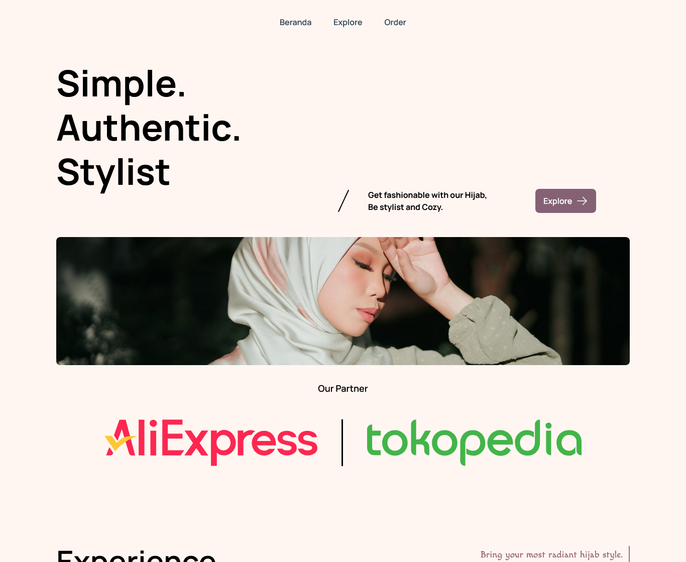

Hijab Web
Astro + Tailwind CSS
Project Overview
Hijab Web adalah proyek latihan (fake project) untuk mengasah kemampuan dalam membangun website statis modern menggunakan Astro dan Tailwind CSS. Astro dipilih karena terkenal cepat dan ringan di browser berkat arsitektur island components dan zero JavaScript by default. Website ini menampilkan galeri hijab modern, koleksi terbaru, dan informasi brand dengan tampilan yang elegan dan responsif.
Why Astro? Research & Consideration
Sebelum memilih framework, saya membandingkan beberapa opsi untuk website statis e-commerce hijab:
- Astro → Kecepatan luar biasa (hampir 100% HTML murni), kemampuan partial hydration, kompatibel dengan berbagai UI framework.
- Next.js (SSG) → Lebih berat, cocok untuk aplikasi kompleks, namun overkill untuk kebutuhan statis branding hijab.
- Hugo → Cepat tapi kurang fleksibel untuk komponen Tailwind.
Kesimpulan: Astro memberikan keseimbangan terbaik antara kecepatan (Lighthouse skor 100 untuk Performance) dan developer experience. Banyak forum yang merekomendasikan Astro untuk blog, portofolio, dan landing page.
Development & Tech Stack
Proyek ini dibangun dengan komponen-komponen utama:
- Astro 4.x → Framework utama, menggunakan `.astro` komponen.
- Tailwind CSS 3 → Styling utility-first untuk desain responsif dan konsisten.
- Content Collections → Mengelola galeri produk hijab (images, harga, deskripsi) dalam format markdown/YAML.
- Astro Image Optimization → Komponen `
` untuk optimasi gambar otomatis (srcset, lazy loading). - Deployment → Vercel (dengan output static) sehingga loading sangat cepat dan SEO-friendly.
Hasil akhir: website statis dengan total bundle size kurang dari 100KB (CSS + HTML) dan tanpa JavaScript rintisan, namun tetap interaktif untuk menu mobile.
Live demo: https://hijab-web.vercel.app
Key Outcomes & Learnings
Melalui proyek ini, saya berhasil:
- Memahami arsitektur Astro (routing, layout, komponen, dan partial hydration).
- Mengintegrasikan Tailwind CSS dengan Astro tanpa konflik.
- Mengoptimalkan performa website: waktu muat rata-rata 0.3 detik (First Contentful Paint).
- Membangun website yang ringan dan sangat cepat di perangkat mobile sekalipun.
- Menerapkan prinsip Islands Architecture – komponen interaktif hanya di-load jika dibutuhkan.
Proyek ini menjadi bukti bahwa website statis modern bisa semodern SPA tapi dengan performa lebih baik. Pengalaman ini berguna untuk proyek-proyek client yang membutuhkan landing page cepat, blog, atau katalog produk.
Project Gallery